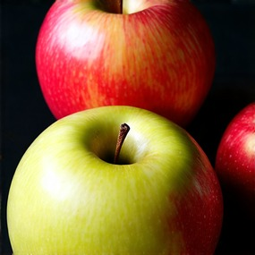
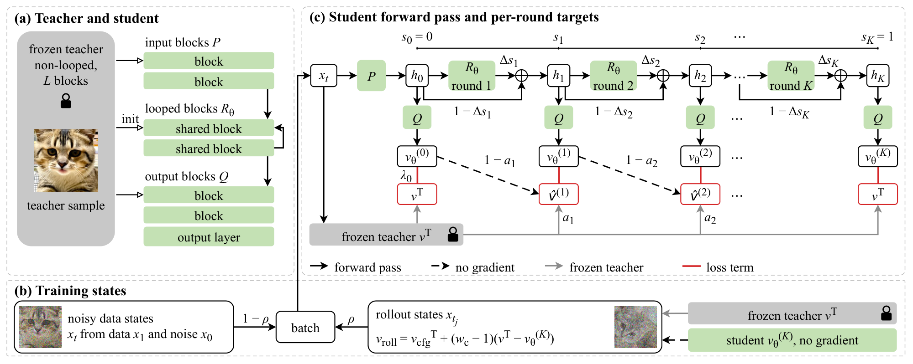
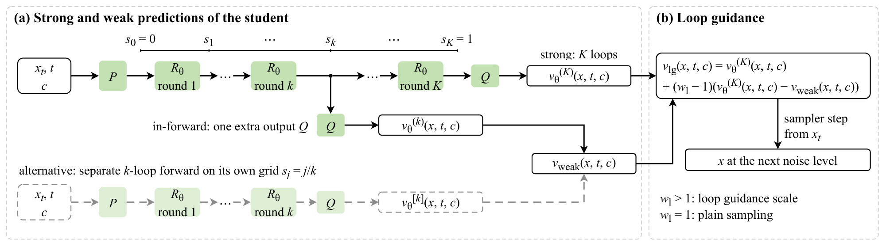
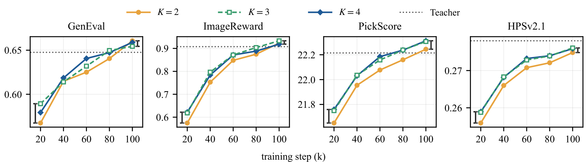

One model, any number of loops
The reel steps through the SD3-medium teacher and then Dooop with K = 1, 2, 3, 4, 8 and 16 loops. Every frame starts from the same initial noise.
Overview
Looped transformers reuse one block of shared weights along the depth of the network. Recent looped diffusion transformers are trained from scratch, which repeats the full pretraining cost even though strong pretrained non-looped diffusion transformers already exist.
Dooop distills a pretrained non-looped diffusion transformer into a looped student. The student keeps a few leading and trailing blocks of the teacher and replaces the middle stack by a small set of shared blocks that are looped. Every block of the student starts from a teacher block.
We cast distillation as a fixed-point iteration toward the teacher: the output after every loop is trained toward the teacher, and each loop is one step of an ordinary differential equation in depth. As a result, one model runs any number of loops at test time without retraining, and the higher-order ODE solvers of diffusion sampling can be applied along depth. Because a looped model produces an output after every loop, we also build loop guidance between the outputs of different loop counts, which improves samples at little extra compute.
- 0.756Bstudent parameters, about 37% of the teacher's
- about 58%of the teacher's compute with two loops
- 100.7 vs 100average over GenEval, ImageReward, PickScore and HPSv2.1 with two loops, teacher = 100
- 105.8average after continued training on real data; GenEval 0.707 vs the teacher's 0.648
- 88.2 → 99.2average of a four-step student with loop guidance, at 7.21 → 7.79 TFLOPs per image
Any number of loops
Pick a prompt and a loop count. The Dooop sample is shown next to the teacher sample from the same initial noise. Changing the prompt keeps the selected K.
Teacher vs. Dooop
The Dooop sample is drawn on top of the teacher sample. Move the slider to fade between them. The prompt and K follow the selection above.
Method
Each loop moves the student a step toward the teacher. The target for the output after a loop mixes the previous loop's output and the teacher velocity, so every loop is pulled toward the teacher and the last loop reaches it. The loops are indexed by a continuous depth coordinate from 0 to 1, so every loop count covers the same depth interval and the loop count is chosen at inference. Training uses noisy data states and rollout states from a sampler that combines the teacher and the current student, so training covers the states the student meets when it samples.




Results
Text-to-image generation with SD3-medium as the teacher
Avg. (%) is the average over GenEval, ImageReward, PickScore and HPSv2.1 relative to the teacher (teacher = 100.0). Best student result of each part in bold.
| Model | TFLOPs | K | GenEval ↑ | ImageReward ↑ | PickScore ↑ | HPSv2.1 ↑ | Avg. (%) ↑ | ||||||
|---|---|---|---|---|---|---|---|---|---|---|---|---|---|
| Single obj. | Two obj. | Counting | Colors | Position | Color attr. | Overall | |||||||
| SD3-medium (teacher) | 50.5 | – | 0.994 | 0.753 | 0.506 | 0.840 | 0.285 | 0.508 | 0.648 | 0.908 | 22.214 | 0.278 | 100.0 |
| Distill | |||||||||||||
| Dooop (ours) | 18.9 | 1 | 0.988 | 0.737 | 0.322 | 0.811 | 0.248 | 0.428 | 0.589 | 0.663 | 21.790 | 0.259 | 88.8 |
| Dooop (ours) | 29.4 | 2 | 0.991 | 0.838 | 0.456 | 0.856 | 0.288 | 0.535 | 0.661 | 0.924 | 22.245 | 0.275 | 100.7 |
| Dooop (ours) | 39.9 | 3 | 0.984 | 0.813 | 0.466 | 0.843 | 0.270 | 0.550 | 0.654 | 0.933 | 22.307 | 0.276 | 100.9 |
| Dooop (ours) | 50.5 | 4 | 0.988 | 0.795 | 0.503 | 0.830 | 0.273 | 0.565 | 0.659 | 0.919 | 22.312 | 0.276 | 100.7 |
| Dooop (ours) | 92.6 | 8 | 0.984 | 0.803 | 0.475 | 0.832 | 0.245 | 0.548 | 0.648 | 0.889 | 22.278 | 0.275 | 99.3 |
| Dooop (ours) | 177.0 | 16 | 0.991 | 0.760 | 0.438 | 0.838 | 0.250 | 0.525 | 0.633 | 0.853 | 22.229 | 0.273 | 97.6 |
| + Real data (training continued on real images after distillation) | |||||||||||||
| Dooop (ours) | 18.9 | 1 | 0.994 | 0.811 | 0.394 | 0.846 | 0.305 | 0.495 | 0.641 | 0.770 | 21.831 | 0.267 | 94.5 |
| Dooop (ours) | 29.4 | 2 | 0.997 | 0.879 | 0.497 | 0.880 | 0.353 | 0.635 | 0.707 | 1.021 | 22.282 | 0.281 | 105.8 |
| Dooop (ours) | 39.9 | 3 | 0.994 | 0.889 | 0.522 | 0.886 | 0.343 | 0.608 | 0.707 | 1.039 | 22.391 | 0.284 | 106.6 |
| Dooop (ours) | 50.5 | 4 | 0.997 | 0.884 | 0.547 | 0.878 | 0.343 | 0.610 | 0.710 | 1.037 | 22.390 | 0.283 | 106.6 |
Compute per image
TFLOPs per image from the table above. The student with four loops costs the same per-image compute as the teacher.
Loop guidance on a four-step student
The student is the CDM-distilled four-step SD3 student, and the teacher is the four-step CDM model. The weak model is either a separate forward pass with k loops or the output after loop k of the same K = 4 forward pass. Best student result in bold.
| Setting | wl | NFE | TFLOPs | GenEval ↑ | ImageReward ↑ | PickScore ↑ | HPSv2.1 ↑ | Avg. ↑ |
|---|---|---|---|---|---|---|---|---|
| Teacher | – | 4 | 7.21 | 0.651 | 1.026 | 22.822 | 0.298 | 100.0 |
| Student | 1 | 4 | 7.21 | 0.592 | 0.739 | 22.381 | 0.273 | 88.2 |
| Weak model: separate k-loop forward | ||||||||
| k = 1 | 2 | 8 | 9.90 | 0.639 | 0.941 | 22.568 | 0.290 | 96.5 |
| k = 1 | 3 | 8 | 9.90 | 0.636 | 0.975 | 22.416 | 0.295 | 97.5 |
| k = 2 | 3 | 8 | 11.41 | 0.627 | 0.907 | 22.540 | 0.288 | 95.0 |
| k = 2 | 4 | 8 | 11.41 | 0.631 | 0.935 | 22.488 | 0.291 | 96.1 |
| Weak model: loop-k output of the same forward | ||||||||
| k = 1 | 2 | 4 | 7.79 | 0.643 | 1.002 | 22.575 | 0.296 | 98.7 |
| k = 1 | 3 | 4 | 7.79 | 0.633 | 1.029 | 22.248 | 0.293 | 98.3 |
| k = 2 | 2 | 4 | 7.79 | 0.634 | 0.971 | 22.613 | 0.294 | 97.4 |
| k = 2 | 3 | 4 | 7.79 | 0.643 | 1.025 | 22.454 | 0.297 | 99.2 |
Metrics during training


Gallery
All prompts at one loop count. Select a tile to open it in the viewer above.